How to use this lesson
§0 · From last time. Build vs buy decided. Now: templates from the three orgs you can adapt.
Business Scenario
Your org isn't HSBC, Helix, or Acme. But the patterns transfer.
Bridge to Topic
Each case study illustrated a class. Find your class; adapt the template.
Mind Map

Mermaid source
mindmap
root((Templates))
Banking/Regulated
Sherpa pattern
Hybrid workflow agent
Audit-first
Research/Knowledge
Helix pattern
Multi-hop RAG
Cite-faithful
Consumer/Scale
Acme pattern
Tiered models
Privilege separation
Elaboration
4.1 Banking / Regulated template
(Sherpa pattern.) Hybrid workflow + agent. Workflow for known cases (cheap, auditable); agent for the tail (adaptive, expensive). Mandatory human review. Full audit trail. ~70% of breaks workflow, ~30% agent.
Translate to: insurance claims, KYC, fraud review, tax classification.
4.2 Research / Knowledge template
(Helix pattern.) Multi-hop agentic RAG with cite-faithfulness mandatory. Plan-and-Solve for hypothesis generation. CodeAct for data manipulation. Human sign-off on conclusions.
Translate to: pharma literature, legal research, scientific literature review, investigative journalism.
4.3 Consumer / Scale template
(Acme pattern.) Privilege-separated (CaMeL). Aggressive caching (semantic + prompt). Model tiering (Haiku for triage, Sonnet for resolution). Graceful degradation under load.
Translate to: customer support, e-commerce assistant, billing inquiries, scheduling.
4.4 Hybrids
Most orgs are hybrids: a banking-style core process + a consumer-style edge. Build each part with the appropriate template.
Problem Statement
Pick the template that fits your org's primary use case. Document differences. Estimate adaptation effort.
Solution Walkthrough
For your situation, the template gives a starting design. Capstone 1 walks through end-to-end design for one custom case.
Mathematical Foundation
(No additional math; reuses Module 11.1 ROI model with template-specific defaults.)
Technical Deep-Dive
8.1 What transfers
Architecture (orchestrator-worker, hybrid pattern, memory tiers). Discipline (eval gates, audit, observability). Mental models (agency dial, Bayesian priors, EVoI).
8.2 What doesn't transfer
Specific tools, specific prompts, specific business rules. Those are 100% yours.
8.3 Common stumbles when adapting
- Underestimating the auditing / governance work for regulated industries
- Overestimating the LLM cost compared to labour cost
- Underestimating the change-management work to get humans to trust the agent
8.4 The change-management playbook
Building the agent is 40% of the work. The other 60% is getting humans to trust and use it.
Phase 1: Shadow mode (weeks 1-4)
- Agent runs but outputs aren't shown to users.
- Outputs logged and compared to human decisions.
- Goal: build the team's confidence; surface integration issues.
Phase 2: Suggestion mode (weeks 5-12)
- Agent's outputs shown to users as suggestions.
- Humans accept, modify, or reject. Always commit themselves.
- Track: accept rate, modify rate, reject rate.
- Goal: humans learn what the agent is good at; agent learns from corrections.
Phase 3: Auto-mode with veto (months 4-12)
- For high-confidence cases (>0.95): agent commits; human notified.
- For mid-confidence (0.7-0.95): agent suggests; human commits.
- For low-confidence (<0.7): escalation; human handles from scratch.
- Track: veto rate; if veto rate > 5%, regress to phase 2.
Phase 4: Trusted autonomy (year 2+)
- Auto for ≥0.85; human review for sample audit only.
- Periodic re-grounding sessions where humans review traces and provide corrections.
Going too fast through phases destroys trust. Going too slow loses ROI. Phase advancement requires quantitative gates, not vibes.
8.5 Stakeholder mapping for agent deployments
Every agent deployment has 5-10 stakeholders. Map them upfront:
stakeholders:
- role: Domain users (Aisha & team)
concern: Will this make my job easier or threaten it?
win: Re-deployment to higher-value work; agent assists, doesn't replace.
- role: Domain leadership (Priya)
concern: P&L impact; risk of being wrong.
win: Defensible ROI; explicit risk modeling.
- role: Model risk (Daniel)
concern: Regulatory compliance; explainability.
win: Full audit trail; documented validation.
- role: Engineering leadership
concern: Maintenance burden; system reliability.
win: Production-grade discipline; runbooks; observability.
- role: Security/compliance
concern: Data leakage; injection vulnerabilities.
win: CaMeL pattern; red-team campaigns; audit logs.
- role: Finance
concern: Cost predictability.
win: Budget gates; cost dashboards; vendor diversification.
Win for each stakeholder. Lose any of them and the deployment stalls.
8.6 The "kill criteria" — when to shut it down
Define upfront what would cause you to kill the project:
- Accuracy can't reach 80% after 3 prompt-iteration cycles.
- Cost-per-task can't be brought under 30% of the labour cost.
- Three or more regulatory blockers identified during validation.
- User-trust metrics (CSAT-equivalent) stay below baseline after 6 months.
Without kill criteria, sunk-cost fallacy keeps zombie projects alive. With them, you make rational shut-down decisions.
8.7 The "what could go wrong" template
For each agent deployment, write a 1-page risk register:
Top risks for Sherpa deployment:
1. Hallucinated counterparty classifications during novel patterns
- Probability: medium
- Impact: financial + audit
- Mitigation: human-in-loop for low-confidence; full trace logged
- Owner: Daniel
2. Prompt-injection via SWIFT messages
- Probability: low
- Impact: financial + reputational
- Mitigation: input quoting; injection detector
- Owner: Security team
3. Vendor outage during nightly batch
- Probability: low
- Impact: operational delay
- Mitigation: graceful degradation to manual queue
- Owner: On-call
4. Regulatory finding during annual audit
- Probability: medium
- Impact: regulatory + reputational
- Mitigation: SR 11-7 dry-run quarterly
- Owner: Daniel
5. Quality regression after model upgrade (Claude Sonnet 4.7)
- Probability: high
- Impact: accuracy + cost
- Mitigation: regression eval blocks upgrade
- Owner: Eng team
Review monthly. Update probabilities and mitigations as the system matures.
8.8 The success-metric scorecard
After 6 months, score the deployment:
metrics:
business:
npv_actual_vs_projected: 100% # met projection
labour_displacement_actual: 23% # vs 21% projected
user_csat: 4.3 # vs 4.2 baseline
cost_per_task: $0.025 # vs $0.030 projected
technical:
accuracy_7d: 89% # vs 87% target
calibration_ece: 0.035 # vs <0.05 target
p95_latency: 7.8s # vs <10s target
incidents_in_period: 2 # 1 cost spike, 1 false alarm
organisational:
user_trust_survey: 4.1 # vs 3.0 at launch
audits_passed: 1 / 1
headcount_change: +0 # no layoffs; capacity reallocated
new_use_cases_enabled: 3 # Aisha's team identified expansions
overall: SUCCESS
recommendation: expand to settlement reconciliation (similar pattern)
This scorecard is what justifies the next agent deployment.
What This Unlocks
- Capstone 1: build a complete agent for your domain using these templates.
- Module 12 advanced designs.